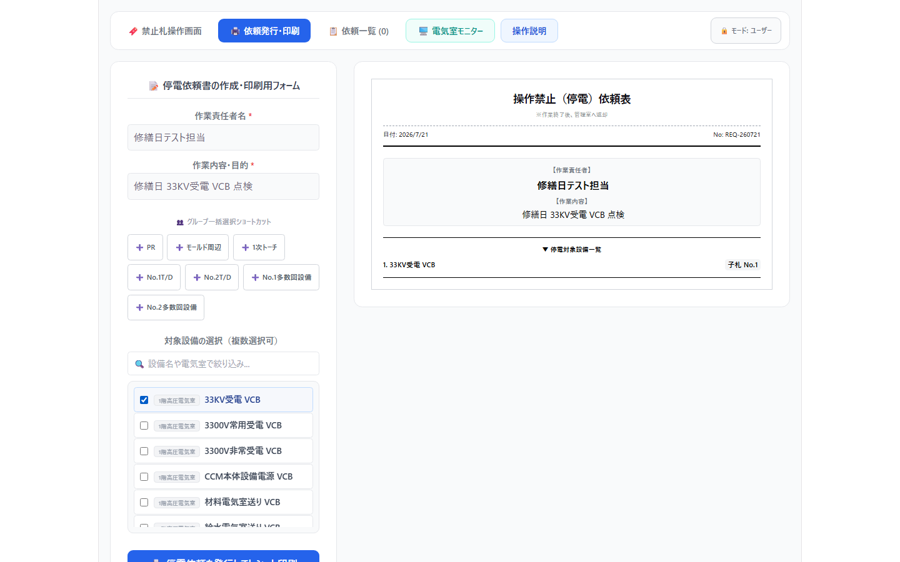
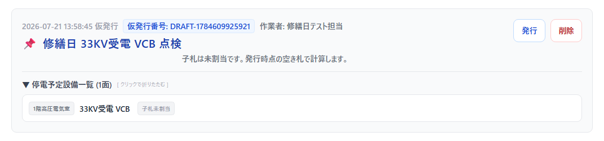

この手順書は、修繕日・大修繕日に予定されている停電作業について、依頼を事前に「仮発行」として登録しておき、当日に内容が一致した依頼だけを正式に発行する手順です。
1. 通常の停電依頼と同じように、作業責任者名・作業内容・対象設備を入力します。
2. 依頼ごとに 仮発行として保存 します。
3. 修繕日または大修繕日に、作業者から依頼を受けます。
4. 依頼一覧 の 仮発行 タブから、作業名・作業者が一致する依頼を探します。
5. 対象設備を確認し、該当する依頼だけを 発行 します。
6. 発行後は、通常の停電手順に従って禁止札の持ち出し、現地停電、操作画面での停電中切替を行います。
1. 上部メニューの 依頼発行・印刷 を選択します。
2. 作業責任者名 に作業者または作業責任者の氏名を入力します。
3. 作業内容・目的 に、修繕日または大修繕日の作業内容を具体的に入力します。
4. 対象設備の選択（複数選択可） から、停電する設備をすべて選択します。
5. 右側の依頼表プレビューで、作業責任者名、作業内容、対象設備が正しいことを確認します。

| 項目 | 入力例 |
|---|---|
| 作業責任者名 | 修繕日テスト担当 |
| 作業内容・目的 | 修繕日 33KV受電 VCB 点検 |
| 対象設備 | 1階高圧電気室 33KV受電 VCB |
1. 依頼表プレビューの内容を確認します。
2. 左下の 仮発行として保存 を押します。
3. 「停電依頼を仮発行し、仮発行一覧へ登録しました。」と表示されたことを確認します。
4. 修繕日にまとめて扱う依頼が複数ある場合は、依頼ごとに同じ操作を繰り返します。
注意: 仮発行の段階では、子札はまだ割り当てられません。子札は、当日「発行」を押したときに、その時点で空いている札から割り当てられます。仮発行しただけでは、設備は停電中になりません。
1. 作業者から停電依頼を受けます。
2. 上部メニューの 依頼一覧 を選択します。
3. 仮発行 タブを選択します。
4. 依頼表と照合し、作業者、作業内容、予定設備 が一致する依頼を探します。
5. 停電予定設備一覧 を展開し、対象設備を確認します。

確認ポイント: 似た作業名がある場合は、作業者名と設備名も必ず照合します。一致しない依頼は発行せず、作業者または責任者へ確認してください。
1. 作業者、作業内容、予定設備が一致した依頼の 発行 を押します。
2. 発行後、依頼が 進行中 の一覧に移ったことを確認します。
3. 印刷された依頼表と、発行時に割り当てられた子札を確認します。
注意: 仮発行が複数あるときも、まとめて発行せず、依頼ごとに照合してから1件ずつ発行します。
1. 印刷された依頼表をもとに、禁止札掛けから割り当てられた子札を持ち出します。
2. 依頼表、子札、現地設備の名称を照合します。
3. 現地の安全手順に従って、実際の設備を停電します。
4. 禁止札操作画面 で状態を 依頼発行中のみ に切り替えます。
5. 該当設備を選択し、操作画面で 現在：通常運用（送電中） を押して 操作禁止（停電中） に切り替えます。
通常の停電操作の詳細は、power-outage-request-user-manual.html を参照してください。
| 確認項目 | チェック |
|---|---|
| 作業責任者名・作業内容・対象設備を入力した | □ |
| 依頼ごとに仮発行として保存した | □ |
| 修繕日に作業者から依頼を受けた | □ |
| 仮発行一覧で作業者・作業内容・設備名を照合した | □ |
| 一致する依頼だけを発行した | □ |
| 発行後、通常の停電手順を実施した | □ |